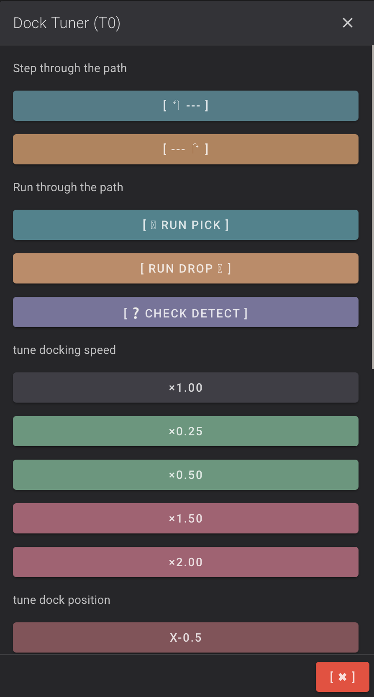
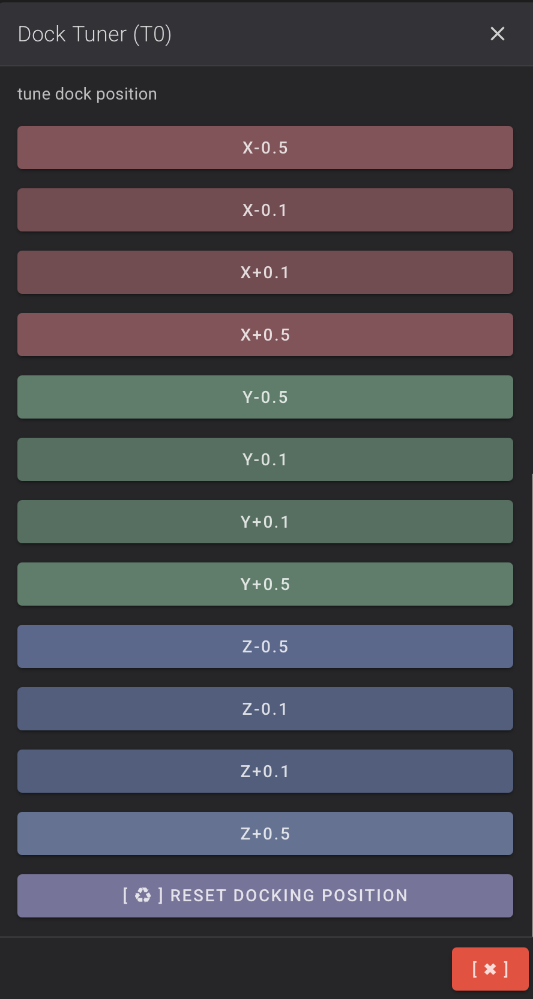
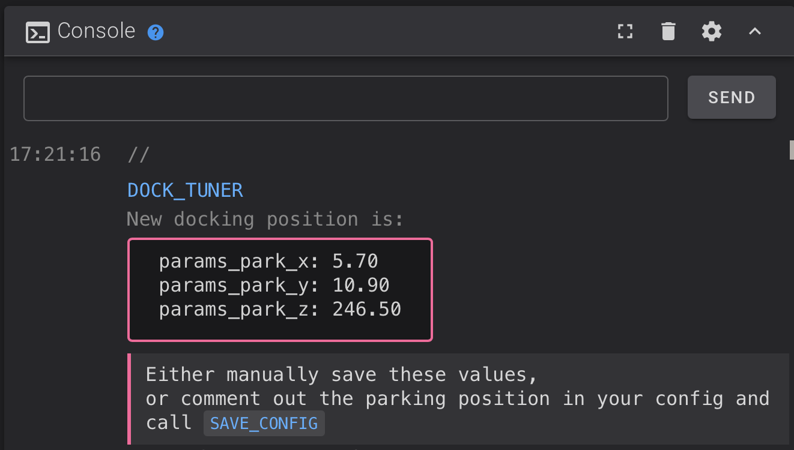

Dock Tuner¶
dock_tuner is a helpful macro that provides an interactive interface for calibrating dock positions. It allows you to step through the docking/undocking sequence and adjust X, Y, and Z positions in real-time, then outputs the final values for your configuration files.
The macro was created by Contomo (SC.0164) for the StealthChanger community.

dock_tuner interactive interface
Installation¶
- Download the latest
dock_tuner.cfgmacro file: - Download from the klipper-toolchanger-hard repository
- Click the "Raw" button on GitHub to download the file directly
- Copy the file to your Klipper config directory:
- Copy
dock_tuner.cfgto~/printer_data/config/stealthchanger/dock_tuner.cfg - The
stealthchangerdirectory should already exist if you've installed klipper-toolchanger-easy - Add this line to your
printer.cfg:ini [include stealthchanger/dock_tuner.cfg] - Run
FIRMWARE_RESTARTto load the macro
Prerequisites¶
Before using dock_tuner, ensure you have:
- Set
params_close_yandparams_safe_yintoolchanger-config.cfg(see Dock Calibration) - Roughly set your
params_park_x,params_park_y, andparams_park_zvalues in your tool config files (you can use the manual calibration method to get initial values)
Workflow for Calibrating All Tools¶
1. Prepare the Printer¶
- Home all axes with T0:
G28 - Run quad gantry leveling:
QUAD_GANTRY_LEVEL - Re-home:
G28
2. Calibrate T0¶
- Ensure T0 is on the shuttle and run
INITIALIZE_TOOLCHANGER - Run
dock_tunerin the console - The macro will provide an interactive interface to step through the docking sequence
- Follow the on-screen prompts to:
- Step through each movement in the docking/undocking path
- Adjust X, Y, and Z positions as needed (the macro will provide adjustment commands)
- Test the docking and undocking sequence

Adjusting dock positions in dock_tuner
- Continue adjusting until the tool docks and undocks smoothly and reliably
- When satisfied, the macro will output the final
params_park_x,params_park_y, andparams_park_zvalues in the console

Final dock position values output by dock_tuner
- Copy these values to
stealthchanger/tools/T0.cfgin the[tool T0]section:ini [tool T0] params_park_x: <value_from_dock_tuner> params_park_y: <value_from_dock_tuner> params_park_z: <value_from_dock_tuner>
3. Calibrate T1 (and Additional Tools)¶
Calibration Procedure
Avoid running INITIALIZE_TOOLCHANGER with T1 or other tools during calibration. While it's technically okay if your gcode_offsets are already perfectly calibrated, it applies offsets which can make the calibration process confusing. It's safer to work directly in T0's coordinate system. DO NOT run G28 with Tn - This establishes Tn's coordinate system and will break calibration.
- Manually place T1 on the shuttle (or use T0 to pick it up from its dock)
- Run
dock_tuneragain - The macro will detect the current tool and calibrate for that tool
- Follow the same adjustment process as T0
- When satisfied, copy the final values to
stealthchanger/tools/T1.cfgin the[tool T1]section:ini [tool T1] params_park_x: <value_from_dock_tuner> params_park_y: <value_from_dock_tuner> params_park_z: <value_from_dock_tuner>
4. Repeat for All Remaining Tools¶
- For each additional tool (T2, T3, etc.), follow the same process as T1
- Remember: don't run
INITIALIZE_TOOLCHANGERwith non-T0 tools during calibration - Copy the values to the corresponding tool config file (
stealthchanger/tools/Tn.cfg)
5. Finalize¶
- Run
FIRMWARE_RESTARTto apply all changes - Test tool changes between all tools to verify everything works correctly
Tips¶
- dock_tuner allows you to see exactly where the tool tries to dock and identify alignment issues
- Watch for the OctoTap LED state change when the tool is detected during pickup
- Make small adjustments (0.1-0.5mm increments) and test frequently
- The Z position should be where 1mm more down would untrigger the tap module
- If you're having issues, check that you haven't accidentally run
INITIALIZE_TOOLCHANGERwith a non-T0 tool
Next: Slicers & Macros → Configure your slicer and print_start macro for multi-tool printing
Related: Dock Calibration → Manual calibration method
FAQ¶
Quick Links:
- dock_tuner doesn't detect my tool
- Can I use dock_tuner with non-T0 tools?
- dock_tuner moves too fast/slow
- The dock positions from dock_tuner don't match my manual calibration
dock_tuner doesn't detect my tool¶
Make sure:
- The OctoTAP board is properly mounted and the optical sensor is aligned
- The tool is properly seated on the shuttle
- Your
params_pickup_pathincludes a step withverify:1parameter - The tool detection is working (you can test with
DETECT_ACTIVE_TOOL_PROBE)
Can I use dock_tuner with non-T0 tools?¶
Yes, but you must manually place the tool on the shuttle first. DO NOT run G28 or INITIALIZE_TOOLCHANGER with non-T0 tools during calibration. Home with T0 first, then manually switch to the tool you want to calibrate.
dock_tuner moves too fast/slow¶
You can adjust the speed multiplier using the SPD parameter. For example, DOCK_TUNER SPD=0.5 will run at 50% speed, or DOCK_TUNER SPD=2.0 will run at 200% speed. Be careful with higher speeds to avoid collisions.
The dock positions from dock_tuner don't match my manual calibration¶
This is normal - dock_tuner provides an interactive way to fine-tune positions. The values should be close to your manual calibration, but may need slight adjustments. Use dock_tuner to refine the positions for optimal tool changes.